Tema 3.B.10
Teoría de la integración económica.
Creación y desviación de comercio (Viner, Lipsey), Kemp-Wan, Corden, centro-periferia, economía política, ecuación de gravedad y evidencia de la integración.
Exclusivo Material exclusivo de victorgutierrezmarcos.es y la app Oposición TCEE · DCE. Puedes usarlo libremente para tu estudio personal. No se autoriza su incorporación a otras plataformas, aplicaciones o servicios. Condiciones de uso.
Introducción
Enganche:
«Dime con quién andas y te diré quién eres», dice el refrán. Toda la teoría de la integración cabe en él: lo que una unión aduanera hace al bienestar de un país depende de con quién la forma.
El 1 de mayo de 2026 empezó a aplicarse de forma provisional el acuerdo comercial de la Unión Europea con el Mercosur. La Unión, la unión aduanera más antigua y profunda del mundo, sigue eligiendo socios, y cada elección abre el mismo debate: ¿ganan los consumidores europeos un proveedor más barato, o se desvía el comercio hacia quien no es el más eficiente?
Detrás está la pregunta de esta exposición: ¿mejora el bienestar suprimir las barreras al comercio con unos países y mantenerlas frente a los demás?
Relevancia:
Desde un punto de vista práctico, basta un dato: a noviembre de 2026 hay 390 acuerdos comerciales regionales notificados a la OMC y en vigor, casi 9 de cada 10 de ellos zonas de libre comercio, y al menos otros 84 en vigor que aún no se han notificado. La integración regional se ha convertido en la vía principal de la liberalización comercial.
La forma que más estudia la teoría, la unión aduanera, es la menos frecuente en la práctica: solo 16 de esos acuerdos son uniones aduaneras. Casi todos los países prefieren no ceder su política comercial.
Desde un punto de vista teórico, la integración es el caso más claro de segundo óptimo: acerca al libre comercio entre los socios y aleja de él frente a terceros, y por eso sus efectos sobre el bienestar no se pueden dar por supuestos.
Contextualización:
. Desde un punto de vista conceptual:
La integración económica es la eliminación de las «fronteras económicas» entre 2 o más países, es decir, de cualquier elemento, no solo físico, que restrinja la circulación de bienes, servicios y factores entre ellos. Tiene una cara negativa, suprimir obstáculos, y otra positiva, crear instituciones y políticas comunes.1
Balassa (1961) la define a la vez como un proceso, las medidas que suprimen la discriminación entre unidades económicas de distintos países, y como un estado, la ausencia de esa discriminación. De ahí su escalera de formas de integración, de la zona de libre comercio a la integración económica total (apartado I.1).
En esta exposición la integración es siempre discriminatoria: las barreras caen entre los socios y se mantienen frente al resto del mundo. Eso la distingue de la liberalización unilateral o multilateral, que rebaja las barreras frente a todos, y es la fuente de todos sus problemas teóricos.
Desde un punto de vista histórico:
La teoría de la integración nace como un apéndice de la teoría del comercio internacional: estudia la protección discriminatoria, la que se mantiene frente a unos países y se suprime frente a otros. Su campo se ha ido ampliando a la movilidad de factores, a la moneda y a las instituciones, y bebe hoy de la organización industrial, la teoría del crecimiento, la geografía económica y la economía política.2
Teoría tradicional (años 50 y 60): Viner (1950) demuestra que una unión aduanera puede empeorar el bienestar; Meade (1955a) y Lipsey (1957) añaden los efectos sobre el consumo. Es un análisis estático, con competencia perfecta, y no es casual que surja a la vez que la Comunidad Económica Europea.
Nueva teoría de la integración (años 80): las economías de escala y la competencia imperfecta y los efectos sobre el crecimiento, al calor del mercado único europeo.
Geografía económica (desde 1991): dónde se instala la actividad cuando caen las barreras.
Desde los años 90, la economía política explica por qué los gobiernos eligen unos acuerdos y no otros, y la ecuación de gravedad, ya con fundamentos teóricos, se convierte en la herramienta estándar para medir sus efectos.
Como el libre comercio mundial es inalcanzable, la integración se ha entendido siempre como un segundo óptimo del librecambio de Smith y Ricardo: elimina unas distorsiones y mantiene otras [ver tema 3.A.22].3
Problemática (preguntas clave):
. La exposición responde a 4 preguntas:
¿Mejora el bienestar una integración que, por definición, discrimina entre socios y terceros? (apartado I)
¿Por qué se integran los países, y por qué con unos socios y no con otros? (apartado II)
¿Cómo se miden los efectos de la integración y qué dicen los datos? (apartado III)
¿Son los acuerdos regionales un peldaño o un escollo para el libre comercio multilateral? (conclusión)
Estructura:
La exposición sigue el orden en que la teoría ha ido levantando supuestos, de los efectos a sus causas y a su medida.
I. Efectos de la integración económica (I), la primera cara de la moneda, qué cambia al integrarse: primero el análisis estático clásico de las uniones aduaneras, con país pequeño y competencia perfecta, y después lo que ese análisis dejaba fuera (compensaciones, país grande, competencia imperfecta, crecimiento y redistribución) y las formas superiores de integración.
II. Determinantes de la integración económica (II), la otra cara, por qué y con quién se integran los países: la geografía y la economía política.
III. Metodología empírica y evidencia (III): cómo se miden esos efectos, con la ecuación de gravedad como herramienta central, y qué dice la evidencia.
3.B.10. Teoría de la integración económica
Introducción2′30″
I. Efectos: ¿qué ganan y qué pierden los países al integrarse?13′
1. Formas de integración y enfoques
2. Efectos estáticos de las uniones aduaneras (Viner, Meade, Lipsey, factores, Cooper y Massell)
3. ¿Por qué puede ser mejor la unión aduanera? (Kemp y Wan, país grande, competencia imperfecta, crecimiento, redistribución)
4. Formas superiores
II. Determinantes: ¿por qué, y con quién, se integran los países?5′
1. Determinantes geográficos
2. Determinantes políticos
III. Metodología empírica y evidencia de la integración8′
1. Modelos de equilibrio general computable
2. La ecuación de gravedad
3. Nuevos modelos cuantitativos
4. Evidencia
Conclusión1′30″
Reparto del cante: introducción, 2′30″; I, 13′ (I.1, 1′; I.2, 6′; I.3, 5′; I.4, 1′); II, 5′ (advertencia, 0′15″; II.1, 2′15″; II.2, 2′30″); III, 8′ (idea, 0′15″; III.1, 1′15″; III.2, 3′45″; III.3, 0′45″; III.4, 2′), y conclusión, 1′30″. El apartado I se apoya en la escalera de formas de integración (tabla 1, en versión mínima: 7 peldaños) y en el gráfico de Viner y Lipsey (gráfico 10), por capas; el apartado II, en el diagrama tomahawk (gráfico 14), y el apartado III, en la ecuación de gravedad. Los gráficos imprescindibles son el de Viner y Lipsey con sus 2 capas, el de Corden (gráfico 12) y el tomahawk. Los refranes: el del enganche, «dime con quién andas y te diré quién eres», y las pegatinas «para este viaje no se necesitaban alforjas» (Cooper y Massell), «quien da primero da dos veces» (la especialización perversa), «arrimarse al sol que más calienta» (el modelo centro-periferia), «cuando las barbas de tu vecino veas pelar, pon las tuyas a remojar» (el dominó de Baldwin) y «el roce hace el cariño» (la ecuación de gravedad). Lo que va en cajas grises, en notas y en los anexos es para las preguntas del tribunal.
Notación. \(A\) es el país propio, \(B\) el socio y \(R\) el resto del mundo; \(X\) e \(Y\), los 2 bienes cuando el análisis es de equilibrio general. \(p_A\), \(p_B\) y \(p_R\) son los precios (costes unitarios) a los que cada país ofrece el bien, en minúscula como todo precio de un bien; \(t\) es un arancel ad valorem, de modo que el bien de \(R\) llega a \(A\) a \(p_R(1+t)\), y \(t'\) es el arancel no discriminatorio de Cooper y Massell, con \(p_R(1+t')=p_B\). \(x\) y \(q\) son el consumo y la producción de \(A\); \(p^{\mathrm{UA}}\), el precio tras la unión con economías de escala. \(\mathrm{RRI}=p_X/p_Y\) es la relación real de intercambio, y \(\mathrm{RMS}_{XY}\) y \(\mathrm{RMT}_{XY}\), las relaciones marginales de sustitución y de transformación. En el modelo centro-periferia, \(\mu\) es el peso de las manufacturas, \(\lambda_i\) la cuota de la región \(i\) en los trabajadores industriales, \(\sigma\) la elasticidad de sustitución entre variedades, \(\tau>1\) el coste iceberg y \(\phi_\tau=\tau^{1-\sigma}\) la libertad comercial. En la ecuación de gravedad, \(X_{ij}\) es el comercio del exportador \(i\) al importador \(j\), \(Y_i\) el tamaño, \(d_{ij}\) la distancia, \(\tau_{ij}\geq 1\) el coste bilateral de comerciar (no el arancel \(t\)), \(u_{ij}\) el término de error y \(\mathrm{ACR}_{ij}\) la variable del acuerdo comercial regional. Las siglas van en redonda: ZLC (zona de libre comercio), UA (unión aduanera), ACR (acuerdo comercial regional), MEGC (modelos de equilibrio general computable) y NGE (nueva geografía económica).
I. Efectos de la integración económica: ¿qué ganan y qué pierden los países al integrarse?
En el cante (13′): I.1, 1′, con la escalera de formas; I.2, 6′, que se abre con el hilo del apartado de palabra (el gráfico 3 es de apoyo: cada modelo levanta un supuesto hasta Cooper y Massell y la pregunta clave), con Viner con la lectura de la tabla 2 (1′45″: 3 situaciones, ninguna, creación y desviación; la tabla y el gráfico 4 son de apoyo); Meade de palabra (0′30″); Lipsey en equilibrio parcial con el gráfico 10 dibujado capa a capa hasta las áreas \(a\)-\(e\) y el efecto neto \(b+d-e\) (1′15″); el equilibrio general (0′45″), con los 3 pasos de los gráficos 7-9 contados de palabra (libre comercio, arancel y unión: la desviación puede mejorar) y la regla de Lipsey (1960); los factores, en los 3 grupos de la tabla 3 (0′45″), y Cooper y Massell, añadiendo al mismo gráfico las áreas \(f\) y \(g\) (1′), con la pegatina «para este viaje no se necesitaban alforjas», la pregunta clave y los supuestos a)-f) de los Wonnacott, que anuncian el apartado I.3; I.3, 5′, con Kemp y Wan frente al artículo XXIV (0′30″); el país grande (0′45″); la competencia imperfecta (2′15″), con el gráfico de Corden (caso a) y el cuadro de los 3 casos, la especialización perversa de palabra con «quien da primero da dos veces», Krugman (1979) y las conclusiones de Melitz; los efectos dinámicos (1′) y Stolper y Samuelson en mención (0′30″); I.4, 1′, sobre la escalera del apartado I.1, marcando los peldaños superiores.
Conclusión anticipada: los efectos estáticos de una unión aduanera son ambiguos, y una rebaja no discriminatoria del arancel podría lograr lo mismo sin desviar comercio. Lo que justifica la integración es lo que ese análisis deja fuera (compensaciones, poder sobre la relación real de intercambio, escala, competencia y crecimiento), que además tiene costes redistributivos.
Nexo: se estudia la unión aduanera porque es la forma que dio origen a la teoría; casi todo vale para una zona de libre comercio. Empezamos por las formas que puede tomar la integración.
I.1. Idea: formas de integración y enfoques
La integración puede tomar distintas formas según el grado de compromiso de los países. La escalera de Balassa (1961), con el mercado único que añade la experiencia europea, ordena las formas por lo que añade cada peldaño al anterior (tabla 1). Las 7 formas, con sus ejemplos, se desarrollan en el anexo A.
| Preferencias | ZLC | UA | Mercado común | Mercado único | Unión económica | Integración total | |
|---|---|---|---|---|---|---|---|
| Rebaja de aranceles entre socios | \(\checkmark\) parcial |
\(\checkmark\) | \(\checkmark\) | \(\checkmark\) | \(\checkmark\) | \(\checkmark\) | \(\checkmark\) |
| Arancel exterior común | \(\times\) | \(\times\) | \(\checkmark\) | \(\checkmark\) | \(\checkmark\) | \(\checkmark\) | \(\checkmark\) |
| Libre circulación de factores | \(\times\) | \(\times\) | \(\times\) | \(\checkmark\) | \(\checkmark\) | \(\checkmark\) | \(\checkmark\) |
| Supresión de las barreras no arancelarias | \(\times\) | \(\times\) | \(\times\) | \(\times\) | \(\checkmark\) | \(\checkmark\) | \(\checkmark\) |
| Coordinación de políticas (y moneda común en la unión económica y monetaria) | \(\times\) | \(\times\) | \(\times\) | \(\times\) | \(\times\) | \(\checkmark\) | \(\checkmark\) |
| Instituciones supranacionales con poder de decisión | \(\times\) | \(\times\) | \(\times\) | \(\times\) | \(\times\) | \(\times\) | \(\checkmark\) |
Fuente: elaboración propia a partir de Balassa (1961) y Pelkmans (2006).
Zona de libre comercio (ZLC) frente a unión aduanera (UA): en la ZLC cada socio mantiene su arancel frente a terceros, y la mercancía de fuera puede entrar por el socio con el arancel más bajo y llegar al de arancel más alto (gráfico 1).
Es la desviación del tráfico (trade deflection), que no hay que confundir con la desviación de comercio de Viner.
Se combate con reglas de origen, que solo dejan circular libremente lo producido en la zona, del todo o en un porcentaje del valor añadido; pero encarecen y complican el comercio (el «plato de espaguetis» del apartado II.2).
La UA la evita con un arancel exterior común, a cambio de ceder la política comercial: es un territorio aduanero único, con una legislación aduanera y una política comercial comunes.
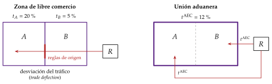
Fuente: elaboración propia a partir de Camarero y Tamarit (2019, cap. 1).
Las reglas de la OMC: la integración discrimina, y choca con la cláusula de nación más favorecida del artículo I del GATT. Por eso solo se admite como excepción [ver tema 3.B.33]:
el artículo XXIV del GATT ampara las ZLC y las UA que cubran «lo esencial de los intercambios comerciales» entre los socios;
en una UA, el arancel común no puede ser «en conjunto» más alto que la protección previa, medida, desde el Entendimiento de 1994, con el promedio ponderado de los aranceles y de los derechos percibidos;
las preferencias parciales solo caben entre países en desarrollo, al amparo de la cláusula de habilitación de 1979, y en servicios rige el artículo V del Acuerdo General sobre el Comercio de Servicios (AGCS) [ver tema 3.B.34].
La práctica: pocos procesos son formas puras, y los acuerdos de nueva generación cubren servicios, inversión, contratación pública y normas aunque sean, formalmente, ZLC. Su número se ha multiplicado desde los 90 (gráfico 2).
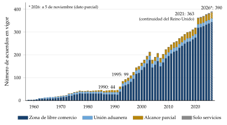
Fuente: elaboración propia con datos de la OMC, base RTA-IS (Organización Mundial del Comercio, 2026c). Acuerdos en vigor a 31 de diciembre de cada año, sin adhesiones; el dato de 2026 es parcial (a 5 de noviembre).
Lectura del gráfico: hasta 1990 había solo 44 acuerdos en vigor; en los 90, tras el fin de la Guerra Fría y la creación de la OMC, entraron en vigor 145. El salto de 2021 son sobre todo los acuerdos de continuidad del Reino Unido tras el Brexit (38 de los 46 que entraron en vigor ese año).
2 enfoques: la teoría tradicional estudia los efectos estáticos de una UA con competencia perfecta (apartado I.2); la nueva teoría añade la escala, la competencia imperfecta, el crecimiento y la localización (apartados I.3 y II.1).
I.2. Efectos de las uniones aduaneras sobre el bienestar en un contexto de país pequeño, competencia perfecta y análisis estático
Nexo: una vez vistas las formas, pasamos a los efectos de la más estudiada, la UA, en el marco más sencillo: un país pequeño, competencia perfecta y estática comparativa.
El hilo del apartado (gráfico 3): todo él se desarrolla dentro de ese marco, y cada modelo levanta un supuesto del anterior.
Viner parte de una demanda fija y descubre que la UA crea y desvía comercio, así que su saldo es ambiguo. Meade incorpora la demanda y anticipa el segundo óptimo: acercarse al libre comercio no garantiza mejorar.
Lipsey lo formaliza con oferta y demanda (el saldo es \(b+d-e\)) y en equilibrio general, donde incluso la desviación puede mejorar el bienestar. Los factores ordenan después de qué depende el signo de ese saldo.
Cooper y Massell cierran el hilo: en este marco siempre existe una rebaja no discriminatoria del arancel que da una ganancia inequívoca de bienestar, mayor que la de cualquier UA.
La pregunta clave: si es así, ¿por qué se crean uniones aduaneras en vez de rebajar el arancel frente a todos? La respuesta, que da paso al apartado I.3, es que el análisis es incompleto: cada supuesto del marco que se levanta es una razón para preferir la unión.
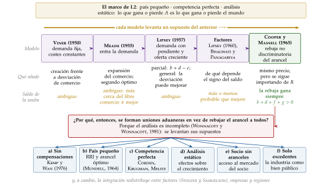
I.2.1. Aportación de Viner (1950)
a) Idea
Las UA combinan proteccionismo hacia fuera (erga extra, frente al resto del mundo) y libre comercio hacia dentro (erga intra, en su interior).
Hasta los 50 se pensaba que una UA mejoraba siempre el bienestar, porque estaba más cerca del libre comercio. Viner (1950) es el primero en rebatirlo, antes de que existiera la teoría del segundo óptimo: toda UA tiene 2 efectos contrapuestos.
Creación de comercio: cuando 2 países forman una UA (el razonamiento vale para una ZLC), la supresión del arancel hace más barato importar del socio que producir en casa. El país deja de producir un bien con costes altos y pasa a importarlo del socio, más eficiente: se crea comercio que antes no existía.
Desviación de comercio: la formación de la unión lleva a un país a dejar de importar de un tercero con costes bajos para importar del socio, con costes más altos, solo porque el arancel ya no grava al socio. El arancel común, que protege al productor ineficiente de dentro frente a la competencia de fuera, es lo que la hace posible.
b) Modelo
i) Supuestos
Equilibrio parcial: 3 países, el nuestro (\(A\)), el socio (\(B\)) y el resto del mundo (\(R\)), y un solo bien.
\(A\) es pequeño: \(B\) y \(R\) le venden a precios dados, \(p_B\) y \(p_R\) (oferta perfectamente elástica); los costes de \(A\) también son constantes, \(p_A\).
Antes de la unión, \(A\) grava todas las importaciones con un arancel ad valorem \(t\); después, suprime el de \(B\) y lo mantiene frente a \(R\).
Demanda de \(A\) perfectamente inelástica, fija en \(\bar{x}\) unidades (el supuesto que levantan Meade y Lipsey).
Competencia perfecta en los mercados de bienes (\(p=\mathrm{CMg}\)) y de factores.
ii) Desarrollo
| Situación | \(B\) (socio) | \(A\) (nuestro país) | \(R\) (resto del mundo) | Efecto de la unión | |
|---|---|---|---|---|---|
| 1 | Coste | 16 | 10 | 12 | Ninguno: \(A\) sigue produciendo |
| Antes de la unión | 24 | 10 | 18 | ||
| Después de la unión | 16 | 10 | 18 | ||
| 2 | Coste | 8 | 10 | 12 | Creación de comercio |
| Antes de la unión | 12 | 10 | 18 | ||
| Después de la unión | 8 | 10 | 18 | ||
| 3 | Coste | 8 | 10 | 6 | Desviación de comercio |
| Antes de la unión | 12 | 10 | 9 | ||
| Después de la unión | 8 | 10 | 9 |
Fuente: elaboración propia a partir de Viner (1950).
Situación 1: el socio es caro; \(A\) sigue produciendo y la unión no cambia nada.4
Situación 2, creación de comercio, con \(p_B<p_A<p_R(1+t)\): \(A\) producía a 10 y pasa a importar de \(B\) a 8. Con una demanda fija de \(\bar{x}\) unidades, \(A\) gana \((p_A-p_B)\,\bar{x}=2\bar{x}\): libera recursos que costaban 10 para obtener lo mismo por 8.
Situación 3, desviación de comercio, con \(p_R<p_B<p_R(1+t)<p_A\): \(A\) importaba de \(R\) a \(p_R(1+t)=9\) y pasa a importar de \(B\) a 8. Los consumidores ganan \([p_R(1+t)-p_B]\,\bar{x}=\bar{x}\), pero el Estado deja de recaudar \(t\,p_R\,\bar{x}=3\bar{x}\). El saldo es \[\Delta W=[p_R(1+t)-p_B]\,\bar{x}-t\,p_R\,\bar{x}=(p_R-p_B)\,\bar{x}<0:\] \(A\) pierde exactamente lo que el socio es más caro que el proveedor eficiente.
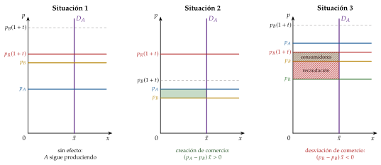
Fuente: elaboración propia a partir de Viner (1950).
iii) Implicaciones
Si la desviación de comercio domina a la creación, la UA reduce el bienestar de \(A\). Su efecto es, por tanto, ambiguo: depende de con quién se forme.
Como \(A\) es pequeño, sus decisiones no alteran el bienestar de \(B\) ni de \(R\): lo que gana o pierde \(A\) es lo que gana o pierde el mundo.
c) Valoración
A favor: es pionero al cuestionar que una UA sea siempre deseable, y sus 2 conceptos siguen siendo los que se usan para evaluar cualquier acuerdo.
En contra: parte de supuestos muy restrictivos. Sobre todo, no tiene en cuenta la demanda, que supone fija. Meade (1955a) y Lipsey (1957) levantan ese supuesto y añaden a los efectos sobre la producción los efectos sobre el consumo.
I.2.2. Aportaciones de Meade (1955): expansión del comercio y teoría del second best
La aportación de Meade es pionera en 2 sentidos:
En primer lugar, Meade (1955a) incorpora la demanda: la UA cambia los precios relativos y, con ellos, lo que se demanda. Si un bien se obtiene más barato, se compra más de él: es la expansión del comercio, una ganancia para los consumidores, que compran más y pagan menos.
En segundo lugar, anticipa la teoría del segundo óptimo (second best), que Lipsey y Lancaster (1956) demuestran en general [ver tema 3.A.22]: si una condición de Pareto no puede cumplirse, no es necesariamente deseable cumplir las demás. Acercarse al primer óptimo suprimiendo una distorsión no garantiza mejorar.5
Aplicado a la UA, el segundo óptimo da 2 resultados:
La UA da menos bienestar que el libre comercio. El óptimo de Pareto mundial exige \(\mathrm{RMS}_{XY}=\mathrm{RMT}_{XY}=\mathrm{RRI}\). Con libre comercio se cumple; con una UA, el arancel frente a terceros abre una brecha entre los precios interiores y la relación real de intercambio, y la igualdad se rompe.
La UA no es necesariamente mejor que un arancel no discriminatorio. Elimina una distorsión, el arancel entre los socios, pero mantiene otra, el arancel frente a terceros. Aunque estemos más cerca del libre comercio, no estamos necesariamente mejor: es un problema de segundo óptimo, y su signo, una cuestión empírica.
I.2.3. Aportación de Lipsey (1957)
a) Idea
Lipsey (1957) estudia a la vez la producción y el consumo, y lo hace en equilibrio general. Su resultado se entiende mejor empezando por su traducción de manual en equilibrio parcial, con oferta y demanda.
b) Modelo de equilibrio parcial
i) Supuestos
Los de Viner, salvo 2, que se levantan:
la demanda de \(A\) tiene pendiente negativa: la caída del precio aumenta el consumo y, con él, el excedente del consumidor; es la creación de consumo;
el coste marginal de \(A\) (su curva de oferta) es creciente, no constante.
La recaudación del arancel se devuelve a los consumidores como transferencia de suma fija.6
ii) Desarrollo
Paso 1, antes de la unión (gráfico 5): dibujamos la demanda de \(A\), \(D_A\), con pendiente negativa, y su oferta, \(S_A\), creciente. El resto del mundo ofrece el bien a \(p_R\), de forma perfectamente elástica.
Con el arancel no discriminatorio, el precio interior es \(p_R(1+t)\): es más bajo que el de \(B\) con arancel, \(p_B(1+t)\), pero más alto que el de \(B\) sin él, \(p_R<p_B<p_R(1+t)<p_B(1+t)\), así que \(A\) importa de \(R\).
A ese precio, \(A\) produce \(q_0\), donde corta a su oferta, consume \(x_0\), donde corta a su demanda, e importa la diferencia, \(x_0-q_0\). El Estado recauda el arancel sobre esas importaciones.
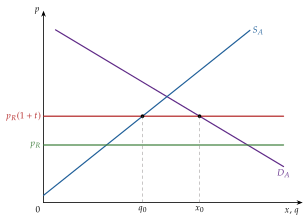
Fuente: elaboración propia a partir de Lipsey (1957).
Paso 2, con la unión (gráfico 6): \(B\) vende ahora sin arancel a \(p_B<p_R(1+t)\), mientras \(R\) sigue pagándolo. El precio interior baja a \(p_B\).
La producción cae de \(q_0\) a \(q_1\): la parte más cara de la producción nacional se sustituye por importaciones de \(B\).
El consumo sube de \(x_0\) a \(x_1\), y todas las importaciones, \(x_1-q_1\), vienen ahora de \(B\).
Las áreas entre los 2 precios, \(a\) a \(d\), y el rectángulo \(e\), entre \(p_B\) y \(p_R\), recogen lo que gana y pierde cada agente.
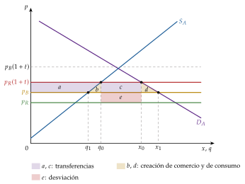
Fuente: elaboración propia a partir de Lipsey (1957).
iii) Implicaciones
Efectos sobre cada agente:
excedente del consumidor: \(+(a+b+c+d)\);
excedente del productor: \(-a\);
recaudación: \(-(c+e)\), que pasa a ser nula.
Efecto neto: \[\Delta W=\underbrace{b}_{\text{creación de comercio}}+\underbrace{d}_{\text{creación de consumo}}-\underbrace{e}_{\text{desviación de comercio}}\]
\(b\): la producción nacional cara que se sustituye por importaciones del socio, más barato;
\(d\): el consumo que la bajada del precio hace posible (la novedad frente a Viner);
\(e\): lo que se paga de más por comprar a \(B\) y no a \(R\) lo que ya se importaba.
El efecto de una UA frente a un arancel no discriminatorio sigue siendo ambiguo, como en Viner: gana más cuanto más elásticas sean la oferta y la demanda (\(b\) y \(d\) mayores) y cuanto menor sea el sobrecoste del socio (\(e\) menor).7
c) Modelo de equilibrio general
El análisis de Lipsey (1957) fue en realidad de equilibrio general, y fue pionero en estudiar así las UA. Su resultado es más fuerte que el de equilibrio parcial: la desviación de comercio puede mejorar el bienestar.
i) Supuestos
3 países (\(A\), \(B\) y \(R\)) y 2 bienes, \(X\) (exportable de \(A\)) e \(Y\) (importable), con \(p_Y^R<p_Y^B<p_Y^A\): \(R\) es el productor más eficiente de \(Y\). \(A\) y \(B\) forman la unión: suprimen entre sí los aranceles y los mantienen frente a \(R\).
\(A\) es pequeño: la relación real de intercambio con cada país viene dada.
Las preferencias de la sociedad de \(A\) se representan con curvas de indiferencia convexas: la sustitución entre bienes en el consumo es la novedad frente a Viner.
Tecnología neoclásica de buen comportamiento, con funciones de producción continuas, 2 veces diferenciables, crecientes, estrictamente cuasicóncavas y con rendimientos constantes a escala: la frontera de posibilidades de producción (\(FPP\)) es cóncava.8
Competencia perfecta en los mercados de bienes (\(p=\mathrm{CMg}\)) y de factores.
La recaudación del arancel se devuelve a los consumidores como transferencia de suma fija.
ii) Desarrollo
Paso 1, libre comercio (gráfico 7): \(A\) se especializa en \(X\) e importa \(Y\) de \(R\), el más barato. La relación real de intercambio es \(\mathrm{RRI}=p_X^A/p_Y^R\) (la recta dorada).
\(A\) produce en \(P\), donde la RRI es tangente a la \(FPP\): allí la relación marginal de transformación iguala el precio relativo mundial.
Intercambia a lo largo de esa recta y consume en \(C\), donde es tangente a la curva de indiferencia más alta posible, \(I_0\). \(A\) exporta \(X\) e importa \(Y\).
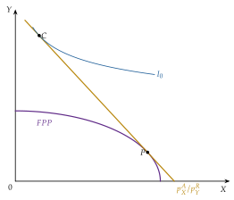
Fuente: elaboración propia a partir de Lipsey (1957).
Paso 2, arancel no discriminatorio (gráfico 8): \(A\) grava las importaciones de \(Y\), vengan de donde vengan, y el precio relativo interior pasa a ser \[\frac{p_X^A}{p_Y^R(1+t)}<\frac{p_X^A}{p_Y^R}\equiv\mathrm{RRI}:\] el país se enfrenta a precios distintos de los mundiales, y la recta de precios interiores (la verde) es más plana que la RRI.
Los productores de \(Y\), más protegidos frente a \(R\), producen más \(Y\) y menos \(X\): la producción se desplaza por la frontera hasta \(P'\), donde es tangente la recta de precios interiores.
Los consumidores sufren 2 cambios. Primero, igualan su \(\mathrm{RMS}_{XY}\) al precio interior, no a la RRI. Segundo, con la recaudación devuelta, la recta de precios interiores se desplaza en paralelo hacia arriba (la verde discontinua).
El consumo queda en \(C'\), donde esa recta es tangente a una curva de indiferencia, y sobre la paralela a la RRI que pasa por \(P'\) (la dorada discontinua), porque \(A\) sigue comerciando con \(R\) a los precios mundiales: es pequeño. \(C'\) está en una curva de indiferencia, \(I_1\), más baja que \(I_0\).9
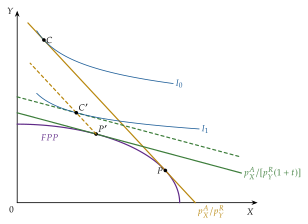
Fuente: elaboración propia a partir de Lipsey (1957).
Paso 3, unión aduanera con \(B\) (gráfico 9): si \(p_Y^B<p_Y^R(1+t)<p_Y^A\), \(A\) deja de importar de \(R\) y pasa a importar de \(B\), sin arancel.
La relación de intercambio pasa a ser \(p_X^A/p_Y^B\) (la recta roja), peor que la de \(R\): es la desviación de comercio.
Pero desaparece la distorsión del arancel en lo que se importa: productores y consumidores vuelven a enfrentarse al mismo precio relativo con el que \(A\) comercia. La producción pasa a \(P''\) y el consumo, a \(C''\).
En el gráfico, \(C''\) está en la misma curva de indiferencia que \(C'\): la unión deja el bienestar igual que el arancel. Es solo una posibilidad, dibujada así para mostrar que el resultado no está decidido de antemano: con un \(B\) algo más barato, \(C''\) quedaría en una curva más alta, y con uno más caro, en una más baja.
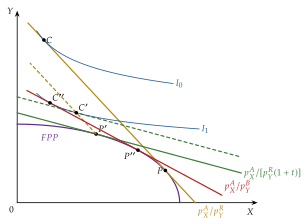
Fuente: elaboración propia a partir de Lipsey (1957).
iii) Implicaciones
Arancel y unión son 2 subóptimos: acercarse al óptimo de Pareto suprimiendo unas imperfecciones no garantiza mejorar respecto a una situación con más imperfecciones (la teoría del segundo óptimo). La desviación de comercio, que en equilibrio parcial con demanda fija siempre empeoraba, puede mejorar el bienestar porque suprime la distorsión del consumo.
Lipsey (1960) lo resume en una regla: una UA tiene más probabilidad de mejorar el bienestar cuanto mayor sea la parte del comercio de un país que se hace con el socio, cuanto menor la que se hace con el resto del mundo y cuanto menor sea el comercio exterior en relación con el consumo de bienes nacionales.
d) Valoración
Lipsey confirma, con la demanda y en equilibrio general, lo que anticipaba el segundo óptimo: acercarse al libre comercio suprimiendo unas distorsiones y no otras no garantiza mejorar, ni empeorar. Lo que decide es la estructura del comercio de partida, y eso lleva a preguntarse de qué depende el saldo.
I.2.4. Factores de los que depende el saldo de una unión aduanera
Los modelos anteriores dicen que el saldo es ambiguo; la literatura ha ordenado los factores que lo inclinan a un lado u otro. Se agrupan en 3: los de antes de la unión, los de después y la estructura del acuerdo (tabla 3).
| Factor (signo) | Por qué | |
|---|---|---|
| Antes de la unión | Aranceles previos altos (\(+\)) | Más producción nacional cara que sustituir: más creación |
| Mayor diferencia de costes entre \(A\) y \(B\) (\(+\)); menor entre \(B\) y \(R\) (\(+\)) | Más ganancia por unidad creada; menos sobrecoste por unidad desviada | |
| Poco comercio previo con el resto del mundo (\(+\)) | Menos comercio que desviar | |
| Después de la unión | Arancel común bajo (\(+\)) | Menos margen para que el socio caro desplace a \(R\) |
| Oferta y demanda elásticas (\(+\)) | Áreas \(b\) y \(d\) mayores | |
| Estructura | Más miembros (\(+\)) | Más probable que el productor eficiente esté dentro |
| Economías parecidas, productos sustitutivos (\(+\)) | Compiten entre sí: más creación y menos desviación | |
| Número de bloques en el mundo (\(\pm\)) | No monótono: el bienestar mundial es mínimo con unos 3 bloques |
Fuente: elaboración propia a partir de Lipsey (1960), Krugman (1991c) y J. Bhagwati y Panagariya (1996).
La sustituibilidad: en el caso extremo en que \(A\) y \(B\) producen el mismo bien industrial y \(A\) importaba de \(R\) bienes agrícolas que \(B\) no produce, la unión crea comercio en la industria y no desvía nada en la agricultura.
El número de bloques: Krugman (1991c) muestra que el bienestar mundial no depende de forma monótona del número de bloques. Con un solo bloque hay libre comercio mundial y con muchos bloques pequeños apenas hay protección; el mínimo está en torno a 3 bloques.
El comercio previo entre los socios es el factor más debatido:
para la hipótesis de los socios comerciales naturales, los países que ya comercian mucho entre sí, a menudo vecinos, crearían comercio sin apenas desviarlo;
J. Bhagwati y Panagariya (1996) la rechazan: si el socio es un proveedor caro, cuanto más se le compraba antes con arancel, más recaudación se pierde al suprimirlo, y el volumen previo de comercio no dice nada del signo del efecto. Con datos de EE. UU., ni la cercanía ni el volumen de comercio predicen las ganancias de un acuerdo.
I.2.5. Comparación de la unión aduanera con una reducción de aranceles no discriminatoria (Cooper y Massell, 1965)
a) Idea
Cooper y Massell (1965a) dan la vuelta a la pregunta: siempre existe una rebaja no discriminatoria del arancel que da una ganancia de bienestar mayor que la UA, y sin ambigüedad.
b) Modelo
i) Supuestos
Los de Lipsey en equilibrio parcial.
ii) Desarrollo
Paso 3, la rebaja no discriminatoria (gráfico 10, que añade al anterior las áreas \(f\) y \(g\)): en vez de formar una UA, \(A\) rebaja el arancel frente a todos hasta el \(t'\) que iguala el precio de \(R\) con arancel al de \(B\), \(p_R(1+t')=p_B\).
El precio interior es el mismo que con la unión, \(p_B\): la producción cae igual, a \(q_1\), y el consumo sube igual, a \(x_1\).
La diferencia está en quién vende: las importaciones siguen viniendo de \(R\), el proveedor eficiente, y pagan el arancel \(t'\). El Estado recauda \(t'\,p_R\) por unidad sobre las importaciones, \(x_1-q_1\): son los rectángulos \(f\), \(e\) y \(g\), entre \(p_R\) y \(p_B\).
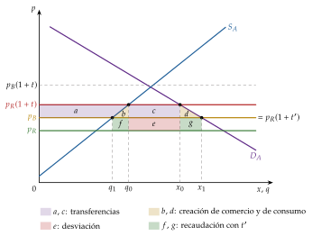
Efectos sobre cada agente:
excedente del consumidor: \(+(a+b+c+d)\), como con la unión;
excedente del productor: \(-a\), como con la unión;
recaudación: pasa de \(c+e\) a \(e+f+g\), es decir, varía en \((f+g)-c\), que puede ser positivo o negativo.
Efecto neto: \(b+d+f+g>0\), una ganancia inequívoca. Frente a la UA, la rebaja no discriminatoria gana además \(e+f+g\): no hay desviación de comercio (\(e\) ya no se pierde) y el Estado sigue recaudando (\(f+g\)).
Comparación de los saldos (gráfico 11), con los valores del ejemplo del gráfico: las 2 políticas dan la misma ganancia de creación de comercio y de consumo, \(b+d\). La unión le resta la desviación, \(e\), y en el ejemplo acaba en pérdida; la rebaja le suma la recaudación, \(f+g\), y gana siempre. La distancia entre las 2 es \(e+f+g\).
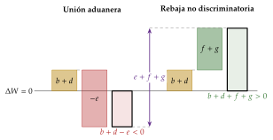
iii) Implicaciones
Si siempre hay una rebaja no discriminatoria mejor, ¿por qué se crean uniones aduaneras en vez de recurrir a rebajas de este tipo? Como señalaron los hermanos Paul y Ronald Wonnacott (1981), porque el análisis es incompleto. Cada supuesto que se levanta es una razón para preferir la unión:10
Sin compensaciones: el análisis compara políticas sin transferencias entre los socios. Si las ganancias de la unión se reparten con transferencias de suma fija y el arancel común deja inalterado el comercio con terceros, siempre existe una UA que mejora a todos (Kemp y Wan, apartado I.3.1).
País pequeño: se ignoran los efectos de las decisiones de los socios sobre los precios mundiales. Si la unión actúa como un país grande frente al resto del mundo, puede mejorar su relación real de intercambio y su bienestar; es el argumento de los propios Wonnacott (Mundell, apartado I.3.2).
Competencia perfecta: con economías de escala, poder de mercado, productos diferenciados y empresas heterogéneas aparecen efectos nuevos, la reducción de costes, los efectos procompetitivos, la variedad y la reasignación, que una rebaja unilateral no da en la misma medida (apartado I.3.3).
Contexto estático: se comparan 2 equilibrios y no se tienen en cuenta los efectos sobre la inversión, la innovación y la tasa de crecimiento (apartado I.3.4).
Equilibrio parcial de un solo mercado, con un socio sin aranceles: se mira solo el mercado de \(A\). Si el socio protege también su mercado y hay costes de transporte con el resto del mundo, la unión da a \(A\) algo que una rebaja unilateral no da, el acceso preferente al mercado del socio, porque el socio también rebaja su arancel: la integración es un intercambio de concesiones.
Bienestar medido solo con excedentes: si los países valoran la producción industrial en sí misma, como un bien público, la UA es la forma más barata de conseguirla, porque reparte la industria protegida en un mercado mayor. Es el argumento de las uniones entre países en desarrollo de los años 60.
Todos estos efectos pueden hacer que formar una UA sea preferible a rebajar el arancel. Los 4 primeros son los apartados del bloque siguiente, en el mismo orden; el último que se estudia, la redistribución, es el precio de la integración.
I.3. ¿Por qué puede ser mejor la unión aduanera que la reducción indiscriminada de aranceles? Efectos no considerados por Cooper y Massell
Nexo: como acabamos de ver, en el marco estático una rebaja no discriminatoria domina a la UA. Pasamos a ver qué ocurre al levantar, uno a uno, los supuestos de ese marco.
I.3.1. Consideración de posibles compensaciones: Kemp y Wan (1976)
Kemp y Wan (1976), a partir de Ohyama (1972), demuestran que siempre existe una UA que mejora a sus miembros sin empeorar al resto del mundo: basta fijar el arancel exterior común que deja inalterado el comercio con terceros y repartir las ganancias dentro de la unión con transferencias de suma fija.
Intuición: si el comercio con el resto del mundo no cambia, no hay desviación de comercio; dentro de la unión, la supresión de barreras es un paso hacia el libre comercio con compensaciones, y es una mejora en el sentido de Pareto.
Límites: es un resultado de existencia; no dice qué arancel elegir ni que la unión vaya a elegirlo, y las compensaciones rara vez se pagan. Implica que ampliar uniones de este tipo puede llevar, paso a paso, al libre comercio mundial.11
No hay que confundirlo con la regla del artículo XXIV.5 del GATT (apartado I.1): el arancel común no puede ser «en conjunto» más alto que la incidencia media de los aranceles anteriores. La regla mira el nivel del arancel; el teorema, que el comercio con terceros no cambie. Un arancel igual a la media puede seguir desviando comercio.
I.3.2. Consideración de un país grande: efectos sobre la relación real de intercambio (Mundell, 1964)
Hasta ahora los socios eran pequeños frente al resto del mundo y la unión no podía alterar los precios mundiales. Si son grandes, el resultado cambia.
Al formar la UA, \(A\) discrimina a favor de \(B\) en unos bienes, lo que mejora la relación real de intercambio (RRI) de \(B\) frente a \(A\) y a \(R\), porque sube la demanda de sus exportaciones y su precio; y \(B\) discrimina a favor de \(A\) en otros, lo que mejora la RRI de \(A\). Por tanto:
el efecto neto sobre la RRI entre \(A\) y \(B\) es ambiguo;
el efecto sobre la RRI de la unión frente a \(R\) es inequívoco: la unión importa menos de \(R\) y, como es grande, el precio de esas importaciones baja; su RRI mejora.
Esa ganancia de la unión frente al resto del mundo es la del arancel óptimo [ver tema 3.B.7]: la unión, con más poder de mercado que cada socio, puede fijar un arancel común que mejore su RRI, a costa del resto del mundo y con riesgo de represalias. Es lo contrario de Kemp y Wan: allí la unión mejora sin perjudicar a terceros; aquí mejora porque los perjudica.
Una unión grande tiene además más peso en las negociaciones comerciales mundiales (apartado II.2). La RRI y las curvas de oferta neta con las que se ve este efecto se estudian aparte [ver tema 3.B.5].
I.3.3. Consideración de competencia imperfecta
Efectos procompetitivos
La integración reduce el poder de mercado de las empresas nacionales en los sectores de bienes comerciables, lo que mejora la eficiencia asignativa y la productiva.
En el modelo de Brander y Krugman (1983), 2 monopolios nacionales protegidos por el arancel pasan, al integrarse, a competir à la Cournot en los 2 mercados [ver tema 3.A.19]: sube la cantidad, baja el precio y se reduce el margen. Con costes de comercio nulos el bienestar sube sin ambigüedad; con costes de transporte altos, el «dumping recíproco» malgasta recursos en cruzar la frontera y el saldo puede ser negativo [ver tema 3.B.6] [ver tema 3.B.8].
Los efectos procompetitivos son de 3 tipos:
efecto precio: la reducción de los márgenes;
efecto no precio: el estímulo a la innovación;
reducción de las ineficiencias: los incentivos a reducir la ineficiencia X de Leibenstein (1966) [ver tema 3.A.12].
Economías de escala: Corden (1972)
a) Idea
La teoría tradicional suponía costes marginales constantes (Viner) o crecientes (Lipsey). Pero muchas industrias tienen economías de escala internas12 [ver tema 3.A.12], y una UA les da un mercado mayor en el que aprovecharlas.
Corden (1972) muestra que con escala siguen existiendo la creación y la desviación de comercio, y surgen 2 efectos más:
el efecto reducción de costes, positivo: lo que ya se producía se produce más barato, al aprovechar la escala;
el efecto supresión de comercio, negativo: la unión permite que nazcan empresas que solo sobreviven gracias a la protección común y que sin ella serían desplazadas por las importaciones del resto del mundo.
b) Modelo
i) Supuestos:
3 países (\(A\), \(B\) y \(R\)) y un solo bien; \(A\) y \(B\) forman la unión;
tecnología con economías de escala: el coste medio es decreciente y, con precio igual al coste medio, la curva de coste medio hace de curva de oferta;13
preferencias idénticas en \(A\) y \(B\), y por tanto curvas de demanda idénticas;
un productor como mucho por país, porque con fuertes economías de escala no caben más;
relación de costes: el resto del mundo es el productor más eficiente y vende a \(p_R\); \(B\) produce más barato que \(A\). Cada caso parte de una situación distinta:
caso a), arancel prohibitivo y un productor en cada país: \(p_R<p_B<p_A<p_R(1+t)\);
caso b), un productor solo en \(B\), que abastece su mercado (\(p_B<p_R(1+t)\)), mientras \(A\) importa de \(R\);
caso c), ningún productor: los 2 países importan de \(R\) porque, a la escala de un solo mercado, producir costaría más que \(p_R(1+t)\).
ii) Desarrollo del caso a) (gráfico 12): antes de la unión, cada país se abastece de su propia empresa, al precio en que su curva de coste medio corta a su demanda, \(p_A\) y \(p_B\). Con la unión, la empresa de \(B\) abastece los 2 mercados. Al vender más, su coste medio baja hasta \(p^{\mathrm{UA}}\), donde \(\mathrm{CMe}_B\) corta a la demanda conjunta \(D_{A+B}\), con \(p_R<p^{\mathrm{UA}}<p_B<p_A\):
en \(A\), creación de comercio: el productor nacional cierra y \(A\) importa de \(B\) más barato; sus consumidores ganan el área entre \(p_A\) y \(p^{\mathrm{UA}}\) bajo \(D_A\);
en \(B\), reducción de costes: lo que ya se producía en casa se produce ahora más barato; sus consumidores ganan el área entre \(p_B\) y \(p^{\mathrm{UA}}\) bajo \(D_B\);
no hay desviación de comercio (\(A\) no importaba de \(R\)) ni supresión de comercio (no nace ninguna empresa).
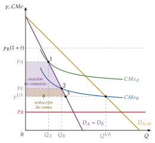
Fuente: elaboración propia a partir de Corden (1972).
| a) Un productor en cada país | b) Un productor, en \(B\) | c) Ningún productor | |
|---|---|---|---|
| Productores antes \(\rightarrow\) después | 2 \(\rightarrow\) 1 | 1 \(\rightarrow\) 1 | 0 \(\rightarrow\) 1 |
| Creación de comercio (\(+\)) | \(\checkmark\) en \(A\) | \(\times\) | \(\times\) |
| Desviación de comercio (\(-\)) | \(\times\) | \(\checkmark\) en \(A\), que deja de importar de \(R\) | \(\checkmark\) en \(A\) |
| Reducción de costes (\(+\)) | \(\checkmark\) en \(B\) | \(\checkmark\) en \(B\) | \(\times\) |
| Supresión de comercio (\(-\)) | \(\times\) | \(\times\) | \(\checkmark\) en \(B\): su producción nueva sustituye importaciones de \(R\) |
| Saldo | Positivo | Ambiguo | Negativo en la producción |
Fuente: elaboración propia a partir de Corden (1972). \(\checkmark\): el efecto se da; \(\times\): no se da. En verde, lo que suma al bienestar (un efecto positivo que se da o uno negativo que no se da); en rojo, lo que resta (un efecto positivo que no se da o uno negativo que se da).
Regla de bolsillo: si tras la unión hay menos productores, el bienestar sube (salvo especialización perversa); si hay los mismos, el efecto es ambiguo; si hay más, la producción se encarece.
En el caso c) los consumidores pueden aun así ganar si \(p^{\mathrm{UA}}<p_R(1+t)\), pero la unión ha creado una industria que solo vive de la protección común.
Especialización perversa
Con economías de escala, la unión no garantiza que produzca el más eficiente. Si se abandona el supuesto de demandas idénticas, la empresa de \(A\), con una curva de coste medio más alta, puede partir de un coste medio más bajo porque su mercado era mayor o porque empezó antes, por algún accidente histórico.
Entonces es ella la que se queda con el mercado ampliado: la unión consolida a un productor ineficiente, una especialización perversa (gráfico 13).
Es la misma dependencia de la historia que da la histéresis del modelo centro-periferia: como en la especialización perversa, la historia decide quién se queda con la industria (apartado II.1).
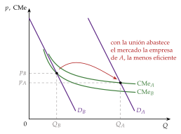
Fuente: elaboración propia a partir de Corden (1972).
Diferenciación de productos: Krugman (1979)
Desde finales de los 70, las nuevas teorías del comercio llevan al comercio internacional la organización industrial [ver tema 3.B.6]. Con productos diferenciados y economías de escala internas, integrar mercados equivale a hacerlos más grandes:
hay más variedades al alcance de cada consumidor;
cada empresa vende más y aprovecha mejor la escala;
con la elasticidad de la demanda creciente de Krugman, la competencia baja el margen y el precio.
Es el comercio intraindustrial que Grubel (1967) documentó en la Comunidad Económica Europea: países parecidos que intercambian variedades del mismo producto. Su ajuste es más suave que el del comercio interindustrial, porque se reestructuran empresas, no sectores enteros.
Heterogeneidad de las empresas: Melitz (2003)
Con empresas de productividad distinta, la integración tiene un efecto que no captan los modelos de empresa representativa: la reasignación hacia las más productivas [ver tema 3.B.6].
Al bajar los costes de exportar, las empresas más productivas, que ya exportaban o empiezan a hacerlo, crecen.
La competencia de las extranjeras y la subida de los salarios expulsan a las menos productivas, que solo vendían en su mercado.
Sube así la productividad media del sector, aunque ninguna empresa haya mejorado: la ganancia está en la composición.
Evidencia: tras el acuerdo de libre comercio entre Canadá y EE. UU. de 1989, las industrias canadienses con las mayores rebajas arancelarias perdieron un 12 % del empleo por el cierre de plantas poco productivas y ganaron un 15 % de productividad del trabajo.
Implicación: las ganancias de la integración se reparten de forma desigual entre empresas, y el coste de ajuste se concentra en las pequeñas que no exportan.
I.3.4. Consideración de un contexto dinámico: efectos sobre el crecimiento
Los efectos dinámicos son los que la integración tiene sobre la tasa de crecimiento, a través de la productividad o de la acumulación de factores, y no solo sobre el nivel de la renta [ver tema 3.B.9]. Los efectos procompetitivos, de escala y de variedad del apartado I.3.3 pasan a ser dinámicos cuando afectan a la innovación.
En el modelo neoclásico, la integración mejora la asignación y eleva el nivel de la renta: sube el capital por trabajador y hay un efecto de acumulación a medio plazo, pero el crecimiento a largo plazo no cambia.
En el crecimiento endógeno el efecto puede ser permanente. Integrar 2 economías que intercambian bienes e ideas equivale a duplicar su población: más investigadores y un mercado mayor para cada invento elevan la tasa de crecimiento [ver tema 3.A.44]. Si solo se integran los bienes y no las ideas, el efecto es menor y puede desaparecer.
El mecanismo, en una línea: en el modelo de Romer (1990), la tasa de crecimiento depende del número de investigadores y del tamaño del mercado de cada invento. Integrar 2 economías iguales que comparten las ideas duplica las 2 cosas y, con ellas, la tasa de crecimiento: es un efecto escala.
En Grossman y Helpman (1991), con 2 países distintos, el que tiene ventaja comparativa en investigación crece más y el otro puede especializarse en bienes que no innovan.
La inversión es la vía más inmediata:
con el mercado ampliado, las empresas de la unión invierten para aprovechar las nuevas oportunidades y alcanzar la nueva escala;
las de terceros países instalan plantas dentro para «saltar» el arancel común y tener acceso a un mercado mucho mayor: es la inversión directa de sorteo del arancel [ver tema 3.B.18].
I.3.5. Efectos redistributivos causados por cambios en los precios relativos
La integración cambia los precios relativos de los bienes y, con ellos, la renta de los factores. Según el teorema de Stolper y Samuelson (1941), en el modelo de Heckscher-Ohlin-Samuelson, la subida del precio relativo de un bien eleva la remuneración real del factor que usa intensivamente y reduce la del otro [ver tema 3.B.5].
La integración genera ganadores y perdedores.
Las barreras al comercio benefician al factor escaso: el arancel eleva el precio relativo del bien importable, intensivo en ese factor.
En un país que se integra con socios más abundantes en su factor escaso, ese factor pierde: tiene un motivo para oponerse a la integración y, si se organiza, para presionar al gobierno. Es el puente con la economía política del apartado II.2.
I.4. Formas superiores de integración
Nexo: hasta aquí, la integración de los mercados de bienes. Al subir por la escalera de la tabla 1 aparecen efectos nuevos:
Mercado común: a la libre circulación de bienes se suma la de factores. MacDougall (1960) lo analiza para el capital: con la productividad marginal decreciente, el capital sale del país donde rinde poco hacia donde rinde más hasta igualar su remuneración.
La producción conjunta aumenta (un triángulo de eficiencia), porque cada unidad de capital pasa a donde produce más.
Pero redistribuye: en el país de destino ganan los trabajadores (más capital por trabajador) y pierden los propietarios del capital local (rinde menos); en el de origen, al revés. Con el trabajo como factor móvil el análisis es simétrico, y explica por qué la inmigración tiene ganadores y perdedores [ver tema 3.B.18].
Comercio de bienes y movimientos de factores pueden ser sustitutivos: en el modelo de 2 bienes y 2 factores, el comercio ya iguala la remuneración de los factores sin que se muevan [ver tema 3.B.5].
Mercado único: además de los aranceles, se suprimen las barreras no arancelarias (normas técnicas, reconocimiento mutuo), que son las que más pesan entre economías avanzadas [ver tema 3.B.39].
Unión monetaria: se suma la moneda común; sus costes y beneficios se estudian con la teoría de las áreas monetarias óptimas [ver tema 3.B.16].
Unión económica: coordinación o unificación de las políticas fiscales y estructurales [ver tema 3.B.19].
Recapitulando: los efectos estáticos de una UA son ambiguos y una rebaja no discriminatoria los domina; lo que justifica la unión es lo que ese análisis deja fuera, las compensaciones, el poder sobre la RRI, la escala, la competencia y el crecimiento. Pero la integración redistribuye entre factores, empresas y, como veremos, regiones. Esto nos lleva a preguntarnos por qué, si sus efectos son tan inciertos, los países se integran.
II. Determinantes de la integración económica: ¿por qué, y con quién, se integran los países?
En el cante (5′): advertencia de las «2 caras», 0′15″; II.1, 2′15″, con las 2 naturalezas y las 2 fuerzas de palabra, y el tomahawk (\(\lambda_A\) frente a \(\phi_\tau\), punto de ruptura y de sostenibilidad), con la pegatina «arrimarse al sol que más calienta» y la «U» de Krugman y Venables; II.2, 2′30″, con el esquema de los 5 determinantes, con la pegatina «cuando las barbas de tu vecino veas pelar, pon las tuyas a remojar» junto al dominó, y el debate del peldaño o el escollo, que prepara la idea final. El modelo completo del centro-periferia (anexo C) no se canta.
Conclusión anticipada: la integración se decide por razones que el análisis del bienestar no recoge. La geografía hace que la actividad se concentre cuando caen las barreras, y la economía política explica que se elijan socios y acuerdos que no son los que más bienestar dan.
Las 2 caras de la moneda: efectos y determinantes son 2 caras de la misma moneda: el efecto que un país espera de la integración es lo que la determina ex ante. Por eso este apartado no repite los efectos de bienestar del apartado I, sino que añade lo que ellos no explican: dónde se instala la actividad cuando caen las barreras (la geografía) y por qué un gobierno elige unos socios y no otros (la economía política).
II.1. Determinantes geográficos
II.1.1. ¿Qué es la nueva geografía económica?
La actividad económica se concentra en el espacio, entre regiones y entre países: el cinturón manufacturero del noreste de EE. UU. en torno a los Grandes Lagos a finales del siglo XIX, la cuenca del Ruhr o, hoy, Silicon Valley. Hay 2 tipos de causas:
de primera naturaleza: los recursos naturales, el clima, los ríos y los puertos;14
de segunda naturaleza: las que crea la propia actividad, como los rendimientos crecientes y los costes de transporte.
La nueva geografía económica (NGE), iniciada por Fujita (1988), Krugman (1991b) y Venables (1996) y recopilada por Fujita, Krugman y Venables (1999), estudia las segundas: cómo una pequeña asimetría entre regiones se convierte en una distribución muy desigual de la actividad, por el juego entre 2 fuerzas.15
Fuerzas de aglomeración (centrípetas): las que concentran la actividad, como un mercado amplio o una mayor productividad.
Fuerzas de dispersión (centrífugas): las que la reparten, como los costes de transporte, la congestión o los factores inmóviles.
Sus modelos tienen 2 sectores: uno tradicional, con un bien homogéneo y rendimientos constantes (la agricultura), y otro diferenciado, con rendimientos crecientes (las manufacturas, por analogía con la concentración industrial de la revolución industrial; hoy, también los servicios avanzados).
Sus resultados son muy sensibles a los supuestos y a los parámetros, lo que dificulta sacar conclusiones de bienestar y de política y contrastarlos.
II.1.2. El modelo centro-periferia (Krugman, 1991)
a) Idea
Igual que Krugman (1979) mostraba que puede haber comercio sin ventaja comparativa, el modelo centro-periferia de Krugman (1991b) muestra que la integración puede concentrar la industria en una región sin que haya diferencias de partida entre ellas. Responde a por qué, y cuándo, un sector se concentra en pocas regiones y deja a las demás relativamente atrasadas.
b) Modelo
i) Supuestos
2 regiones idénticas y 2 sectores:
agricultura, con rendimientos constantes y trabajadores inmóviles, repartidos a partes iguales;
manufacturas, con variedades diferenciadas [ver tema 3.A.18], rendimientos crecientes y trabajadores que emigran hacia el salario real más alto.
Los consumidores gastan una fracción \(\mu\) de su renta en manufacturas; el comercio de manufacturas tiene costes iceberg \(\tau>1\) (de cada \(\tau\) unidades enviadas llega una), y el agrícola es libre.
ii) Desarrollo
Fuerzas de aglomeración:
el efecto del mercado doméstico: las empresas se instalan donde está la demanda, y donde hay más empresas y trabajadores hay más demanda;16
el del coste de la vida: donde hay más variedades, el índice de precios es menor y el salario real mayor, y eso atrae a más trabajadores.
Fuerzas de dispersión: la competencia en el mercado local (más empresas por consumidor) y la demanda de los agricultores, que no se mueven.
El diagrama tomahawk (gráfico 14) resume el resultado en función de la libertad comercial \(\phi_\tau=\tau^{1-\sigma}\), que va de 0 (comercio imposible) a 1 (comercio libre):
con costes de comercio altos (\(\phi_\tau\) bajo), el reparto simétrico es estable: la actividad está dispersa;
al integrarse, \(\phi_\tau\) sube y se cruza el punto de ruptura: el reparto simétrico se vuelve inestable y, ante cualquier perturbación, la industria se concentra en una región;
hay histéresis: entre el punto de sostenibilidad y el de ruptura caben los 2 equilibrios, y la historia decide.
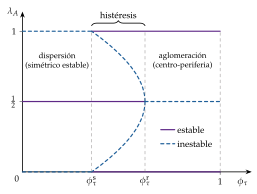
iii) Implicaciones
Rebajar los costes de comercio puede agrandar primero y reducir después la desigualdad entre regiones: la «U» de Krugman y Venables (1995) [ver tema 3.B.40]. Con costes altos cada región produce para sí; con costes intermedios la industria se concentra en el centro; con costes muy bajos la periferia, con salarios más bajos, vuelve a atraerla.
La integración tiene así un efecto que el análisis del bienestar no veía: dónde se produce. Por eso la integración profunda suele ir acompañada de políticas de cohesión.
El desarrollo completo se estudia aparte [ver tema 3.B.6]; lo necesario para leer el tomahawk, en el anexo C.
c) Extensiones
Baldwin y Forslid (2000) unen el modelo centro-periferia con el crecimiento endógeno de Romer (1990): abaratar el comercio de bienes favorece la aglomeración, y abaratar el de ideas (que el conocimiento se difunda entre regiones) favorece la dispersión. La integración puede así estabilizar o desestabilizar el reparto de la actividad según lo que se integre.
d) Valoración
A favor: es muy estilizado, y esa sencillez deja ver los mecanismos que deciden si una industria se aglomera. Todos son endógenos y salen del efecto de la migración sobre la demanda regional, los índices de precios y la demanda de cada variedad.
En contra: sus resultados dependen mucho de los supuestos (un solo factor móvil, costes iceberg, preferencias concretas), y el modelo no dice si la aglomeración es buena o mala para el bienestar del conjunto.
II.2. Determinantes políticos: economía política de la integración económica
Nexo: la geografía dice dónde se instala la actividad; la política, con quién se integra un país. Al empezar un proceso de integración, lo primero que se decide, y no es obvio, es quiénes serán los socios, y muchas veces se elige por razones políticas más que económicas.
Desde un punto de vista histórico:
los primeros teóricos de la integración dejaban fuera las decisiones políticas de todo proceso integrador, desde la firma del primer acuerdo hasta su profundización;
la investigación posterior las incorpora, partiendo de que es un político quien firma el acuerdo, y en su decisión pueden pesar más los motivos políticos que los económicos;
varios autores sostienen que esa es precisamente la razón por la que los países no avanzan hacia el libre comercio y recurren a acuerdos regionales, en el espíritu del segundo óptimo.
Los determinantes políticos que llevan a un país a integrarse, o a no hacerlo, se pueden ordenar en 5:
Poder de negociación: un bloque negocia mejor que cada socio por separado; por eso a los países pequeños les interesa más integrarse. La UE negocia en la OMC y en sus acuerdos como un solo miembro, y ha conseguido así mejores condiciones frente a socios grandes como EE. UU. [ver tema 3.B.41].
Paz y seguridad: la integración europea nació para hacer impensable otra guerra entre Francia y Alemania; la económica fue el medio.
Grupos de presión: el nivel de integración resulta de la demanda de protección de los grupos de interés y de la oferta del gobierno, que pesa su apoyo frente al bienestar general.
Los productores están mejor organizados que los consumidores, y eso sesga los acuerdos: un acuerdo de libre comercio es más viable políticamente cuando desvía comercio, porque entonces los productores del socio ganan cuota a costa de terceros y apoyan el acuerdo, aunque reduzca el bienestar.
Lo que Viner veía como un riesgo es, para la economía política, un incentivo. Por eso los sectores sensibles suelen quedar fuera de los acuerdos o con largos periodos de transición.
Afinidad institucional: socios con regímenes y calidad institucional muy distintos cumplen peor los compromisos, porque unas instituciones son más permeables que otras a los grupos de interés. La ASEAN lo ilustra: su antecesora, la Asociación del Sudeste Asiático de 1961 (Filipinas, la Federación Malaya y Tailandia), quedó paralizada por la disputa entre Filipinas y Malasia sobre Sabah, y en 1967 la sustituyó una asociación más amplia y con reglas más laxas, la ASEAN, que decide por consenso y sin injerencia en los asuntos internos de sus miembros.
Efecto dominó: cada acuerdo perjudica a los exportadores de los países que se quedan fuera, por la desviación de comercio, y estos presionan a su gobierno para entrar; el bloque crece por sí mismo.17
¿Peldaño o escollo?
La pregunta que deja la economía política es si los acuerdos regionales son un peldaño (building block) o un escollo (stumbling block) hacia el libre comercio multilateral.
A favor de que sean un peldaño:
el dominó amplía los bloques hasta hacerlos casi multilaterales;
entre pocos socios se negocia más deprisa y se llega más lejos (servicios, inversión, normas), y lo pactado sirve luego de modelo en la OMC;
si los socios son vecinos que ya comercian mucho, los bloques serían «naturales» y desviarían poco.
En contra:
cada acuerdo tiene sus propias reglas de origen y se superponen en un plato de espaguetis (spaghetti bowl) que encarece el comercio, sobre todo a las pymes;
los grupos que ganan con la preferencia se oponen a extenderla a terceros, y los bloques grandes tienen poder para elevar el arancel común (con unos 3 bloques el bienestar mundial es mínimo, tabla 3).
Integración profunda: con las cadenas globales de valor, lo que se protege ya no es el producto sino la cadena (la fábrica deslocalizada necesita reglas sobre inversión, servicios, propiedad intelectual y movimientos de capital). Los acuerdos de nueva generación regulan esas materias, que la OMC apenas cubre: es el «regionalismo del siglo XXI» [ver tema 3.B.18].
Recapitulando: la integración se decide por la geografía, que concentra la actividad cuando caen las barreras, y por la política, que a menudo prefiere los acuerdos que desvían comercio. Si los efectos son ambiguos en la teoría y los motivos no siempre económicos, solo los datos pueden decir cuánto ha ganado cada acuerdo: es lo que estudia el apartado siguiente.
Lecturas complementarias: el debate de la OMC «¿Son los ACR un escalón o un obstáculo para el sistema comercial?», entre Jagdish Bhagwati y Gary Hufbauer (2007), en https://www.
III. Metodología empírica y evidencia de la integración
En el cante (8′): idea, 0′15″, ex ante frente a ex post; III.1, 1′15″, de palabra («MEGC: ex ante, bienestar», en una línea) con el ejemplo de UE-Mercosur; III.2, 3′45″, con la ecuación de gravedad (1), la versión estructural (2) y, si da tiempo, el esquema del gráfico 15, con la pegatina «el roce hace el cariño»; III.3, 0′45″, de palabra; III.4, 2′, con la tabla 5 de apoyo (se dicen sus 3 o 4 cifras).
Conclusión anticipada: medir la integración es comparar lo que pasó con lo que habría pasado sin ella, un contrafactual que no se observa. Las herramientas han convergido en modelos que dan el bienestar a partir de la gravedad, y la evidencia es clara: los grandes acuerdos han creado mucho más comercio del que han desviado.
Nexo: los apartados I y II dejan la respuesta en el aire: los efectos son ambiguos en la teoría y los motivos, a menudo políticos. Pasamos a ver cómo se miden y qué dicen los datos.
Idea: hay 2 familias de herramientas, y desde 2012 convergen en los nuevos modelos cuantitativos del comercio, que dan el bienestar a partir de la gravedad:
los modelos de equilibrio general computable (MEGC; en inglés, CGE), que simulan ex ante el efecto de un acuerdo sobre la producción, el comercio y el bienestar;
la ecuación de gravedad, que estima ex post cuánto comercio ha añadido un acuerdo.
III.1. Modelos de equilibrio general computable
Son modelos numéricos del equilibrio walrasiano con muchos sectores, factores y países, calibrados a un año base recogido en una matriz de contabilidad social [ver tema 3.A.21]. Simulan el acuerdo comparando el equilibrio con y sin él.
Aplicación: la Comisión Europea evalúa así cada acuerdo comercial antes de negociarlo y de firmarlo [ver tema 3.B.41].
Para el de la UE con el Mercosur, con el modelo dinámico GTAP, estima que el PIB de la UE será unos 77.600 millones de euros mayor en 2040 y sus exportaciones a la región, un 39 % mayores. El acuerdo se aplica de forma provisional desde el 1 de mayo de 2026.
España: Bajo-Rubio y Gómez-Plana (2005) simulan, con un MEGC con rendimientos crecientes y paro de equilibrio, 2 medidas del mercado único (servicios y contratación pública): ganancias de PIB y de bienestar, con contracción de algunos sectores, que piden políticas de acompañamiento para reasignar los recursos.
Valoración: los resultados dependen de las elasticidades y de los cierres elegidos, y han tendido a infravalorar el aumento del comercio, como mostró la evaluación ex post del Tratado de Libre Comercio de América del Norte.
III.2. La ecuación de gravedad
a) Idea
El comercio entre 2 países crece con su tamaño y cae con la distancia, como la atracción entre 2 masas. Es una de las regularidades más sólidas de la economía, y la herramienta estándar para medir cuánto comercio añade un acuerdo.
Nació como regularidad empírica, sin modelo detrás, pero hoy tiene fundamentos teóricos: Anderson (1979) la deriva de preferencias CES por bienes diferenciados por su origen, y Eaton y Kortum (2002), de un modelo ricardiano con muchos bienes.18
b) Modelo
i) Supuestos
Flujo bilateral \(X_{ij}\) del exportador \(i\) al importador \(j\); tamaños \(Y_i\) e \(Y_j\), y \(Y_W\) el del mundo.
Costes bilaterales de comerciar \(\tau_{ij}\geq 1\) (distancia, frontera, aranceles), que no hay que confundir con el arancel \(t\) del apartado I.
Preferencias CES con elasticidad \(\sigma>1\) entre bienes de distinto origen.
ii) Desarrollo
Versión empírica, con \(d_{ij}\) la distancia, \(\mathrm{ACR}_{ij}\) una variable ficticia que vale 1 si \(i\) y \(j\) tienen un acuerdo comercial regional y \(u_{ij}\) el término de error:
\[\ln X_{ij} = \beta_0 + \beta_1 \ln Y_i + \beta_2 \ln Y_j - \beta_3 \ln d_{ij} + \beta_4\,\mathrm{ACR}_{ij} + u_{ij}\tag{1}\]
\(\beta_4\) mide el efecto del acuerdo: con un acuerdo, el comercio es \(e^{\beta_4}\) veces el que habría sin él (gráfico 15).
Versión estructural: \[\tag{2} X_{ij} = \frac{Y_i\,Y_j}{Y_W}\left(\frac{\tau_{ij}}{\Pi_i\,P_j}\right)^{1-\sigma}\] donde \(\Pi_i\) y \(P_j\) son las resistencias multilaterales: lo que cuenta no es lo lejos que están \(i\) y \(j\), sino lo lejos que están en relación con el resto de sus socios.
En la práctica se recogen con efectos fijos de exportador y de importador.
Se estima por pseudo máxima verosimilitud de Poisson (PPML), que trata los flujos nulos y la heterocedasticidad que sesgan la estimación en logaritmos.
Heterogeneidad de empresas: con empresas a la Melitz, la distancia reduce sobre todo el número de empresas que exportan (margen extensivo), no lo que vende cada una (margen intensivo) [ver tema 3.B.6].
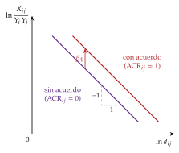
iii) Implicaciones
Elasticidades: renta cercana a 1 y distancia en torno a \(-0{,}9\) en los más de 2.500 coeficientes que recogen Head y Mayer (2014); el de los acuerdos regionales es positivo, pero varía mucho según el método.
Efecto frontera: en 1988 las provincias canadienses comerciaban entre sí unas 22 veces más que con estados de EE. UU. de tamaño y distancia parecidos. Con las resistencias multilaterales la cifra se reduce mucho, pero la frontera sigue restando un 44 % al comercio entre los 2 países. Dentro de un mercado único el efecto frontera debería ser nulo, y no lo es.
Efecto de los acuerdos: tratando el acuerdo como endógeno (los países firman con quien más esperan ganar), un acuerdo de libre comercio duplica aproximadamente el comercio entre sus miembros al cabo de unos 10 años.
c) Evidencia empírica
España: Sanz (2000) estima con una ecuación de gravedad el comercio que habría tenido España sin la entrada en la Comunidad (1986-1992): la rebaja de barreras hizo crecer más las importaciones que las exportaciones, lo que no es necesariamente malo para el bienestar.
La evidencia de los grandes acuerdos, en el apartado III.4.
d) Valoración
A favor: mide bien los flujos y es sencilla de estimar con datos públicos.
En contra: no da el bienestar, para eso hacen falta los modelos del apartado siguiente, y la elasticidad de los acuerdos depende de cómo se trate su endogeneidad.
III.3. Nuevos modelos cuantitativos del comercio
Nexo: la gravedad dice cuánto comercio crea un acuerdo; los nuevos modelos cuantitativos dicen cuánto bienestar. Son modelos de tamaño mediano, ni tan parcos como una ecuación de gravedad ni tan prolijos como un MEGC, que permiten simular contrafactuales.
Arkolakis, Costinot y Rodríguez-Clare (2012) muestran que en una amplia clase de modelos (Armington, Krugman, Eaton y Kortum, y versiones de Melitz) la ganancia del comercio depende solo de 2 estadísticos:
la parte del gasto que un país dedica a bienes nacionales;
la elasticidad del comercio a los costes, que estima la gravedad.
Para EE. UU., la ganancia del comercio frente a la autarquía está entre el 0,7 y el 1,4 % de la renta real.
Costinot y Rodríguez-Clare (2014) lo aplican a muchos países, también España: las ganancias del comercio frente a la autarquía son positivas en todos y crecen mucho al añadir varios sectores, bienes intermedios y competencia imperfecta.19
Miden la ganancia del comercio existente frente a la autarquía, no la de una apertura adicional; para un acuerdo concreto se simula el cambio de costes que supone.
III.4. Evidencia de la integración
El mercado único europeo, antes y después:
En 1988, el informe dirigido por Paolo Cecchini estimó que completar el mercado interior elevaría el PIB comunitario en torno a un 4,5 % a medio plazo (entre el 3,2 y el 5,7 %), con más empleo, precios más bajos y mejores saldos público y exterior. Fue el primer estudio que sumó a los efectos estáticos los de escala y competencia, y daba varias veces la ganancia, de alrededor del 1 % del PIB, que se atribuía a la unión aduanera de 1968.
Las estimaciones ex post le dan la razón en el signo y aun en el tamaño: con el modelo QUEST de la Comisión, el PIB de la UE es entre un 8 y un 9 % mayor de lo que sería sin el mercado único, con ganancias mayores en las economías pequeñas y abiertas.
Acuerdos de libre comercio: duplican el comercio entre sus miembros en una década y, como predice Melitz, elevan la productividad por reasignación.
Desintegración: el Brexit es el experimento inverso.
La Oficina de Responsabilidad Presupuestaria británica supone que la salida reducirá a largo plazo la productividad un 4 % y el comercio un 15 %.
Bloom et al. (2025) estiman que en 2025 el PIB del Reino Unido ya era entre un 6 y un 8 % menor que sin él. La integración también se puede deshacer, y tiene costes.
| Proceso | Tipo | Efecto estimado | Fuente |
|---|---|---|---|
| Mercado único europeo | Ex ante | PIB comunitario \(+4{,}5\) % a medio plazo (3,2-5,7 %) | Emerson et al. (1988) |
| Mercado único europeo | Ex post | PIB de la UE entre un 8 y un 9 % mayor | in ’t Veld (2019a) |
| Acuerdo UE-Mercosur | Ex ante | PIB de la UE 77.600 millones de euros mayor en 2040 | Comisión Europea, Dirección General de Comercio (2025) |
| Acuerdos de libre comercio | Ex post | Comercio entre los miembros \(\times 2\) en 10 años | Baier y Bergstrand (2007) |
| Brexit | Ex post | PIB del Reino Unido entre un 6 y un 8 % menor en 2025 | Bloom et al. (2025) |
Fuente: elaboración propia a partir de las fuentes citadas.
Recapitulando: la gravedad y los nuevos modelos cuantitativos permiten medir lo que la teoría dejaba ambiguo, y la evidencia es favorable: los grandes acuerdos han creado comercio y renta, y deshacerlos cuesta.
Conclusión
Recapitulación:
En conclusión, la integración es la eliminación discriminatoria de barreras entre socios.
Sus efectos estáticos son ambiguos: crea comercio con el socio y lo desvía del proveedor más barato, y una rebaja no discriminatoria podría lograr lo mismo sin desviación.
La justifican lo que el análisis estático deja fuera: compensaciones, poder sobre la relación real de intercambio, escala, competencia y crecimiento.
Tiene costes: redistribución entre factores (Stolper y Samuelson, MacDougall), entre sectores, más acusada si crece el comercio interindustrial que el intraindustrial, y entre regiones (centro-periferia); además, una transmisión más rápida del ciclo, el desbordamiento de las políticas nacionales y menos autonomía de política.
Se decide por razones geográficas y políticas, y se mide hoy con la ecuación de gravedad y modelos cuantitativos que, para la UE, dan ganancias claras.
Relevancia:
La integración es un segundo óptimo: acerca al libre comercio entre los socios y aleja de él frente a terceros, y por eso su efecto sobre el bienestar es una cuestión empírica, no un teorema.
Aun así, la dificultad de avanzar en la OMC ha hecho de los acuerdos regionales la vía principal de liberalización: el artículo XXIV los admite como excepción a la nación más favorecida, y hoy hay en vigor 390 acuerdos notificados a la OMC.
Extensiones:
La teoría de la integración continúa en la de la integración monetaria, que pregunta cuándo compensa renunciar al tipo de cambio propio [ver tema 3.B.16]; en los movimientos internacionales de factores [ver tema 3.B.18] y la coordinación de políticas [ver tema 3.B.19]; y, en la práctica, en los procesos de integración fuera de la UE [ver tema 3.B.35], el mercado único [ver tema 3.B.39] y la política comercial de la Unión [ver tema 3.B.41].
Opinión:
La teoría estática dice que la integración puede empeorar el bienestar; la evidencia dice que, en la práctica, los grandes acuerdos han creado mucho más comercio del que han desviado.
La diferencia está en lo que el análisis de Viner dejaba fuera: la escala, la competencia y la reasignación hacia las mejores empresas.
El riesgo hoy no es tanto la desviación de comercio como la fragmentación en bloques con reglas incompatibles.
Idea final:
¿Peldaño o escollo? La teoría no lo decide: un bloque con arancel común bajo y abierto a nuevos socios, el de Kemp y Wan o el dominó de Baldwin, empuja hacia el libre comercio; un bloque que protege a sus productores ineficientes, el que prefieren los grupos de presión, lo frena.
Al final, como en el refrán, dime con quién andas y te diré quién eres: depende de con quién se ande y de para qué.
A. Anexo: las formas de integración y sus ejemplos
En su forma más básica, la integración es una mera rebaja de aranceles para algunos productos y con algún país; la teoría de la integración se ocupa sobre todo de procesos más amplios. Las formas, de menos a más compromiso (tabla 1):
Acuerdo de preferencias comerciales: rebaja, sin llegar a cero, los aranceles de algunos productos entre los socios, y mantiene los aranceles frente a terceros. Un ejemplo es el Acuerdo de Comercio Preferencial de la Organización D-8 (Bangladés, Egipto, Indonesia, Irán, Malasia, Nigeria, Pakistán y Turquía, ocho países de mayoría musulmana, todos no árabes salvo Egipto, a los que se sumó Azerbaiyán en 2025), firmado en 2006 y en vigor desde 2011, que rebaja aranceles en una lista de productos sin llegar a eliminarlos. Como acuerdo entre países en desarrollo, se ampara en la cláusula de habilitación, no en el artículo XXIV.
Zona de libre comercio: suprime los aranceles y las restricciones cuantitativas entre los socios, y cada uno conserva los suyos frente al resto del mundo. Ejemplos: el T-MEC entre México, Estados Unidos y Canadá (en vigor desde 2020) o la Asociación Europea de Libre Comercio (AELC; en inglés, European Free Trade Association, EFTA), que desde 1960 une hoy a Islandia, Liechtenstein, Noruega y Suiza. Su problema práctico es la desviación del tráfico, que se combate con reglas de origen (gráfico 1).
Unión aduanera: añade un arancel aduanero común frente al resto del mundo, que da la misma protección a cada producto entre por donde entre; exige una legislación aduanera y una política comercial comunes. El ejemplo clásico es la Comunidad Económica Europea: los seis fundadores (Tratado de Roma, 1957) completaron la unión aduanera el 1 de julio de 1968, dieciocho meses antes de lo previsto. La más antigua en funcionamiento es la Unión Aduanera de África Austral (SACU), de 1910, que forman Sudáfrica, Botsuana, Esuatini, Lesoto y Namibia.
Mercado común: a la unión aduanera se suma la libre circulación de los factores, el trabajo y el capital, lo que exige armonizar o coordinar algunas políticas. Un ejemplo, aunque imperfecto, es el Mercosur (Argentina, Brasil, Paraguay y Uruguay, con Bolivia como Estado parte desde 2024 y Venezuela suspendida desde 2017), que en la práctica no pasa de una unión aduanera incompleta y con fallos en la libre movilidad del trabajo.
Mercado único: suprime también las barreras no arancelarias (normas técnicas, reconocimiento mutuo, contratación pública). Es el mercado interior de la UE desde 1993, ampliado a Islandia, Liechtenstein y Noruega por el Espacio Económico Europeo [ver tema 3.B.39].
Unión económica y monetaria: se coordinan las políticas económicas (por ejemplo, la armonización fiscal) y se unifica la política monetaria, con una moneda común y un banco central que controla la inflación de toda el área. La zona del euro, con 21 de los 27 Estados de la UE desde la entrada de Bulgaria en 2026, es el ejemplo de manual [ver tema 3.B.16].
Integración económica total: aun con una política monetaria y fiscal común pueden surgir fallos de gobernanza, y la solución es integrarse también en lo político, con instituciones comunes que legislan y ejecutan para todos. Es la integración que existe entre los estados de una federación.
En la práctica pocos procesos se presentan en estas formas puras. La tipología completa y los ejemplos de cada región se desarrollan aparte [ver tema 3.B.35].
La unión aduanera tampoco está libre de problemas: supone solo libertad de movimiento de bienes, y a medida que los países se integran necesitan mecanismos formales para mover los demás factores, lo que lleva al mercado común; y un mercado común con ciclos y políticas muy dispares empuja hacia la unión económica.
B. Anexo: los casos b) y c) de Corden
Los supuestos son los del apartado I.3.3; la tabla 4 resume los 3 casos.
Caso b), un solo productor, en \(B\): antes de la unión, la empresa de \(B\) abastece su mercado (\(p_B<p_R(1+t)\)) y \(A\) importa de \(R\) a \(p_R(1+t)\). Con la unión, la empresa de \(B\) abastece los 2 mercados y su coste medio baja hasta \(p^{\mathrm{UA}}\).
En \(A\), desviación de comercio: deja de importar de \(R\), el más eficiente, para importar de \(B\). Sus consumidores pueden ganar si \(p^{\mathrm{UA}}<p_R(1+t)\), pero el Estado pierde la recaudación del arancel.
En \(B\), reducción de costes: lo que ya se producía se produce más barato, y sus consumidores ganan el área entre \(p_B\) y \(p^{\mathrm{UA}}\).
No hay creación de comercio (\(A\) no producía) ni supresión (no nace ninguna empresa). El saldo es ambiguo.
Caso c), ningún productor: a la escala de un solo mercado, producir costaría más que \(p_R(1+t)\) y los 2 países importan de \(R\). Con el mercado ampliado y el arancel común, una empresa de \(B\) puede producir para los 2 a \(p^{\mathrm{UA}}\), con \(p_R<p^{\mathrm{UA}}<p_R(1+t)\).
En \(B\), supresión de comercio: una producción nueva y cara, que solo vive de la protección común, sustituye importaciones de \(R\), el productor eficiente.
En \(A\), desviación de comercio: pasa a importar de \(B\) lo que compraba a \(R\).
No hay creación de comercio ni reducción de costes (no había producción que abaratar). En la producción el saldo es inequívocamente negativo; los consumidores solo ganan si \(p^{\mathrm{UA}}<p_R(1+t)\).
C. Anexo: el modelo centro-periferia
El desarrollo completo se estudia aparte [ver tema 3.B.6]; aquí, lo necesario para leer el diagrama tomahawk.
a) Supuestos
2 regiones, \(A\) y \(B\), con la misma tecnología (para que no haya diferencias de partida), y el trabajo total normalizado a 1.
Una fracción \(1-\mu\) de los trabajadores son agricultores inmóviles, repartidos a partes iguales, \((1-\mu)/2\) en cada región.
Una fracción \(\mu\) son trabajadores industriales móviles, con \(\lambda_i\) la cuota de la región \(i\) (\(\lambda_A+\lambda_B=1\)).
El bien agrícola es homogéneo, se produce con una unidad de trabajo por unidad, en competencia perfecta, se comercia sin coste y es el numerario.
Las manufacturas son variedades Dixit-Stiglitz con elasticidad \(\sigma>1\) [ver tema 3.A.18], en competencia monopolística, producidas con un coste \(w_i(F+c\,q)\) y comerciadas con costes iceberg \(\tau>1\).
Los consumidores gastan una fracción \(1-\mu\) de la renta en el bien agrícola y \(\mu\) en manufacturas: \[U=X^{1-\mu}V^{\mu},\qquad V=\Big[\sum_{k=1}^{n}x_k^{\frac{\sigma-1}{\sigma}}\Big]^{\frac{\sigma}{\sigma-1}}.\] La preferencia por la variedad lleva a repartir el gasto entre todas las variedades y a cada empresa a diferenciar la suya, lo que le da poder de mercado.
b) Equilibrio instantáneo (dado \(\lambda_A\))
Precios: cada empresa maximiza beneficios con un margen constante sobre el coste marginal: \(p_{ii}=\frac{\sigma}{\sigma-1}\,c\,w_i\) en el mercado propio y \(p_{ij}=\tau\,p_{ii}\) en el otro.
Libre entrada: con beneficio nulo, \(p\,q=(F+c\,q)\,w\) da \(q^*=\frac{F(\sigma-1)}{c}\), igual para todas las empresas de cualquier región.
Mercado de trabajo industrial: la demanda de trabajo de cada empresa por el número de empresas iguala a la oferta, y \(n_i=\frac{\lambda_i\mu}{F\sigma}\).
Índice de precios de las manufacturas: \(P_i=\big[n_i\,p_{ii}^{1-\sigma}+n_j\,(\tau p_{jj})^{1-\sigma}\big]^{\frac{1}{1-\sigma}}\).
Renta regional, que equivale al equilibrio de la balanza comercial de cada región: \(Y_i=\frac{1-\mu}{2}+\lambda_i\,\mu\,w_i\), y el salario que vacía el mercado de cada variedad cumple \(w_i^{\sigma}\propto Y_i\,P_i^{\sigma-1}+\phi_\tau\,Y_j\,P_j^{\sigma-1}\), con \(\phi_\tau=\tau^{1-\sigma}\).
c) Dinámica
Los trabajadores industriales emigran hacia el salario real más alto, \(\omega_i=w_i/P_i^{\mu}\) (el precio del bien agrícola es 1): \[\dot\lambda_A=\omega_A(\lambda_A)-\omega_B(\lambda_A).\]
3 mecanismos ante una subida de \(\lambda_A\):
mercado doméstico: más gasto en \(A\), aglomeración;
coste de la vida: más variedades locales, \(P_A\) baja, aglomeración;
competencia en el mercado local: más empresas por consumidor, dispersión.
Con \(\phi_\tau\) bajo domina la dispersión; con \(\phi_\tau\) alto, la aglomeración; en medio caben los 2 equilibrios (gráfico 16 y gráfico 14): son estables los equilibrios en los que, ante una perturbación, la diferencia de salarios reales devuelve a los trabajadores al punto de partida.
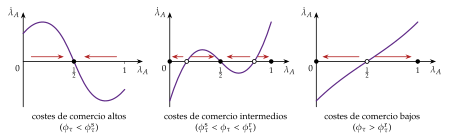
Fuente: elaboración propia a partir de Gandolfo (2014a).
D. Anexo: preguntas de test
Preguntas tipo test del primer ejercicio: simulador de test.
Bibliografía
Según Tinbergen (1954), todo proceso de integración comporta 2 grupos de aspectos: una «integración negativa», la eliminación de obstáculos, restricciones y discriminaciones al movimiento de bienes, servicios y factores productivos (esto es, un proceso de liberalización entre los países que se integran), y una «integración positiva», la modificación de los instrumentos e instituciones existentes y la creación de otros nuevos, a nivel supranacional, para que el mercado funcione con suficiente armonía y se promuevan objetivos más amplios de política económica.↩︎
La teoría de la integración económica se nutre de la teoría del comercio y de la financiación internacional, de la macroeconomía de las economías abiertas y de la economía industrial, que permite analizar el impacto de la integración sobre los mercados no competitivos. Lo que comenzó siendo, con el análisis pionero de Viner (1950), un apéndice de la teoría neoclásica del comercio, dedicado a los efectos de la protección arancelaria discriminatoria en un contexto de «segundo óptimo» (la teoría tradicional de las uniones aduaneras), ha ido ampliando su campo para incluir otros efectos de la liberalización, en especial los llamados «efectos dinámicos», más relevantes que los estáticos aunque más difíciles de cuantificar, y los que se generan al suprimir barreras no arancelarias y entrar en fases más avanzadas de integración (mercado común).↩︎
Los procesos de integración eliminan algunas distorsiones pero mantienen otras respecto del libre comercio, tanto en los países que se integran como en los de fuera, y por eso no llevan a óptimos de Pareto: con la integración no se puede garantizar que mejore el bienestar de todos los países respecto de la situación de partida.↩︎
Es lo mismo que si \(A\) importara de \(R\) antes de la unión y siguiera haciéndolo después. Y también si importara de \(B\) antes y después: aunque tras la unión le compre más barato, la demanda es perfectamente inelástica, la cantidad no cambia y el análisis mira solo a la producción.↩︎
El problema venía del debate entre librecambio y protección: muchos autores defendían que, si había que proteger una industria naciente o corregir una distorsión, era mejor un impuesto o una subvención que un arancel, y que acercarse al libre comercio siempre mejoraba. Lipsey y Lancaster (1956) mostraron que, cuando una condición de Pareto se incumple, el segundo óptimo exige en general incumplir también las demás, y que añadir o quitar una distorsión puede mejorar o empeorar. Gandolfo (2014b) lo ilustra con una cordillera: quien quiere llegar a la cumbre y encuentra el camino cortado puede tener que bajar para subir a un pico más bajo pero accesible (la analogía de la montaña, [ver tema 3.A.22]).↩︎
Con preferencias homotéticas idénticas, de modo que el reparto de la recaudación no altera el patrón de consumo.↩︎
En el gráfico: cuanto más planas son las curvas de oferta y de demanda, más grandes son las áreas \(b\) y \(d\) y mayor es la ganancia de la integración. En el gráfico de la nota, con una oferta \(S'_A\) y una demanda \(D'_A\) más planas que \(S_A\) y \(D_A\), los triángulos de creación de comercio y de consumo pasan de \(b\) y \(d\) a \(b'\) y \(d'\), mientras el rectángulo de desviación, \(e\), no cambia: con curvas muy elásticas la unión puede pasar a mejorar el bienestar.
↩︎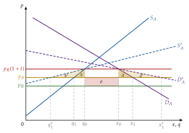
Según las exposiciones habituales del modelo, Lipsey (1957) supone además que \(A\) está completamente especializado en \(X\), de modo que la producción no cambia y todo el efecto es de consumo. Con una frontera cóncava, más familiar, se añade el efecto producción, que es el de equilibrio parcial.↩︎
Aunque suba el precio relativo de \(Y\), no tiene por qué caer el consumo de \(Y\) y subir el de \(X\): depende de los efectos renta y sustitución [ver tema 3.A.8]. Lo que sí se exige es que el nuevo punto de consumo esté en una curva de indiferencia más baja.↩︎
Los propios Cooper y Massell (1965b) reconocen que la UA puede tener efectos positivos por otros canales: la desviación de comercio entre los socios puede aumentar su producción industrial y, con ella, las externalidades positivas que se le atribuyen.↩︎
Dos aplicaciones de la idea: el artículo XXIV.5 del GATT impide que el arancel común sea, en conjunto, más alto que la incidencia media de los anteriores, y el XXIV.6 obliga a compensar a los terceros si la unión eleva algún arancel consolidado [ver tema 3.B.33]; y el Acuerdo de Cartagena (1969), que dio origen a la Comunidad Andina, previó un trato preferente para sus socios de menor desarrollo relativo, Bolivia y Ecuador. Las compensaciones entre miembros que exige el teorema rara vez se pagan.↩︎
La clave son las economías de escala, más que los costes marginales decrecientes: puede haber economías de escala, un coste medio decreciente, con un coste marginal ya creciente, mientras este siga por debajo del medio.
↩︎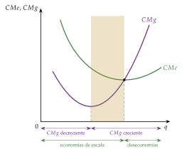
Con economías de escala el precio se fija en el coste medio, no en el marginal: si fuera igual al marginal, que está por debajo del medio, las empresas tendrían pérdidas.↩︎
Las ubicaciones originales de la industria pesada (Pittsburgh en Estados Unidos, Birmingham en Inglaterra y la cuenca del Ruhr en Alemania) reflejan la necesidad de que la producción de hierro y acero tenga lugar cerca de los yacimientos de carbón y de mineral de hierro.↩︎
Es «nueva» porque la localización ya la estudiaron von Thünen (1826), en la localización de los cultivos en torno a las ciudades, Hotelling (1929), en la de las empresas, y Ohlin (1933), que consideraba la localización y los costes de transporte en el comercio interior y en el internacional. Krugman (1991a) define la geografía económica como la localización de la producción en el espacio, la rama de la economía que se ocupa de dónde ocurren las cosas: la teoría de la localización forma parte de ella, y la del comercio internacional sería un caso especial.↩︎
Los costes de transporte generan una causación circular entre el tamaño de la demanda y la localización de las empresas: a más empresas en una región, más demanda de sus bienes, y a más demanda de los bienes de una región, más empresas se instalan en ella.↩︎
La teoría del dominó se conoce también como efecto bola de nieve.↩︎
Como señalan Costinot y Rodríguez-Clare (2014), los tiempos han cambiado: los modelos de gravedad surgieron con Tinbergen (1962) como ateóricos, meramente descriptivos, y hoy se sabe que una amplia clase de modelos microeconómicos del comercio da ecuaciones de gravedad.↩︎
Son modelos de consumidor representativo en los que el cambio del bienestar se mide como el cambio porcentual del consumo real: la variación equivalente del cambio de política, en porcentaje del gasto previo, es decir, el cambio de renta real que el consumidor aceptaría en lugar del cambio.↩︎